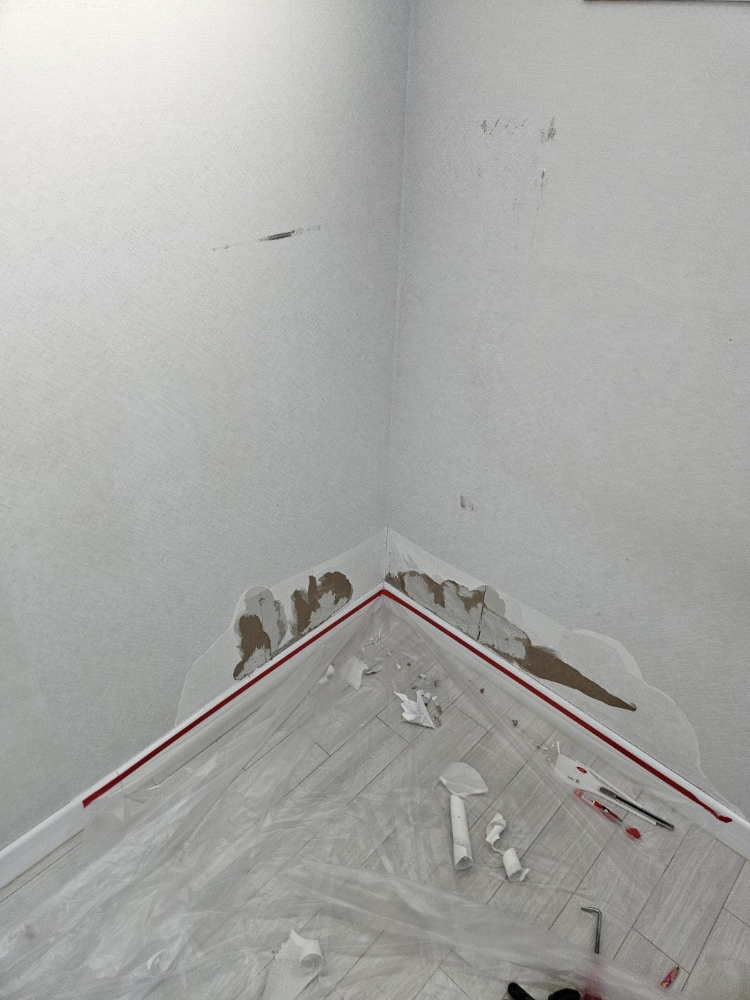
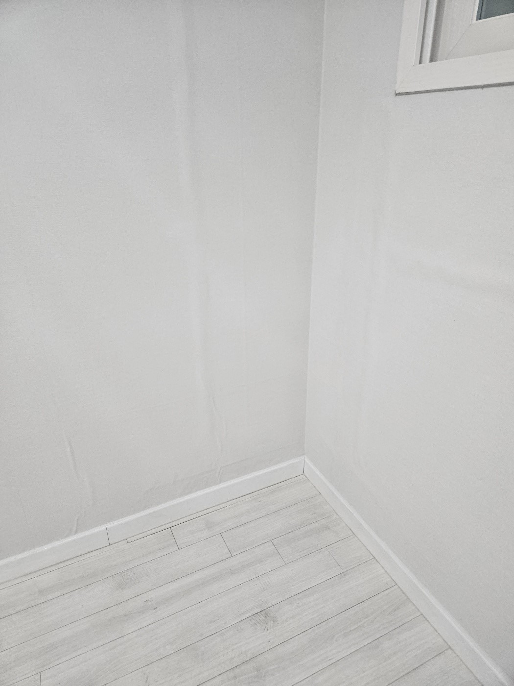

내부 벽지 재시공
뜯기고 약해진 내부 벽지를 정리해 실크벽지가 붙을 바탕을 만듭니다.
강아지가 벽지를 뜯어 이사 전에 원상복구가 필요했던 현장입니다. 표면의 실크벽지만 손상된 것이 아니라 벽에 단차가 생기고 내부 벽지까지 고르지 않은 상태여서, 안쪽부터 다시 정리하고 최대한 비슷한 색상의 실크벽지로 시공했습니다.

실크벽지는 표면이 매끈해 바탕의 굴곡과 단차가 그대로 드러날 수 있습니다. 뜯기고 들뜬 내부 벽지를 정리해 벽면을 고르게 만든 뒤, 주변과 최대한 비슷한 색상과 질감의 벽지를 선택해야 이질감을 줄일 수 있습니다.
찢어진 부분을 바로 덮으면 단차와 들뜸이 남을 수 있어 손상된 내부부터 확인해야 합니다.
뜯기고 약해진 내부 벽지를 정리해 실크벽지가 붙을 바탕을 만듭니다.
울퉁불퉁해진 부분을 고르게 잡아 마감 후 자국이 드러나는 것을 줄입니다.
기존 벽과 어울리도록 최대한 비슷한 색상과 질감의 실크벽지를 고릅니다.
반려동물로 인한 벽지 손상을 정리해 퇴거 전 깔끔하게 마무리합니다.
손상 범위를 확인하고 내부 벽지와 벽면 단차를 정리한 뒤 새 실크벽지를 시공합니다.
바닥과 주변을 보호하고 벽지와 바탕의 손상 범위를 확인합니다.
찢어지고 들뜬 실크벽지와 약해진 내부 벽지를 정리합니다.
안쪽 벽지를 다시 시공하고 벽면의 높이 차이를 고르게 잡습니다.
주변과 비슷한 색상과 질감의 실크벽지를 선택해 정확히 재단합니다.
벽지를 고르게 붙이고 모서리와 연결부, 안 보이는 부분까지 확인합니다.
손상된 내부 벽지와 단차를 정리한 뒤 주변 벽면과 최대한 비슷한 색상의 실크벽지를 시공해 약 3시간 만에 마무리했습니다.

“벽지가 이상하게 뜯어져서 단차가 생겼었는데 깔끔하게 도배가 됐네요~ 벽지도 비슷해서 티가 안 나요^^ 안 보이는 곳까지 꼼꼼하게 시공해주셔서 감사해요~”
| 비교 항목 | 부분도배 | 전체도배 |
|---|---|---|
| 적합한 상태 | 손상이 한쪽 벽면이나 일정 구간에 집중된 경우 | 변색·오염·들뜸이 공간 전체에 넓은 경우 |
| 비용 | 필요한 벽면 중심으로 비교적 부담이 적음 | 공간 전체 자재와 시공 비용이 발생 |
| 작업시간 | 현장 상태에 따라 비교적 짧음 | 가구 이동과 전체 시공 시간이 더 필요 |
| 색상 | 기존 벽지와 최대한 비슷한 제품을 선정 | 공간 전체를 새 벽지로 통일 |
| 효과 | 국소 손상을 정리하고 공사 범위를 줄임 | 노후된 전체 벽면을 한 번에 개선 |
손상된 벽 전체와 뜯긴 부위를 함께 보내주시면 벽지 종류와 바탕 상태를 확인해 상담합니다.